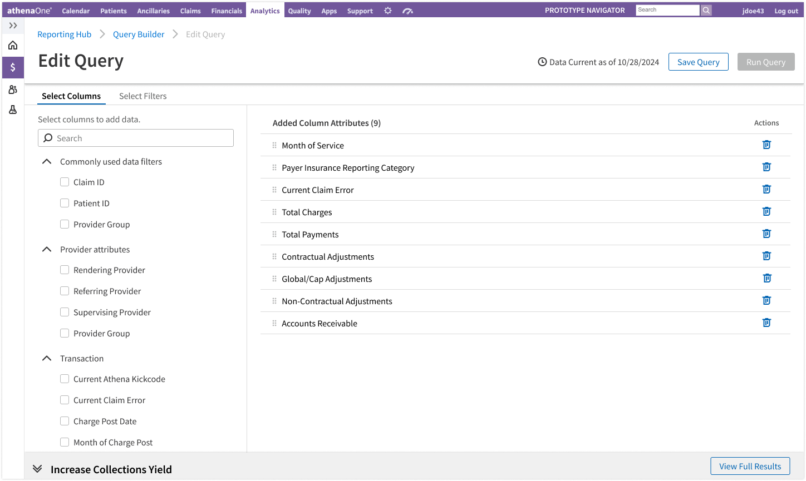
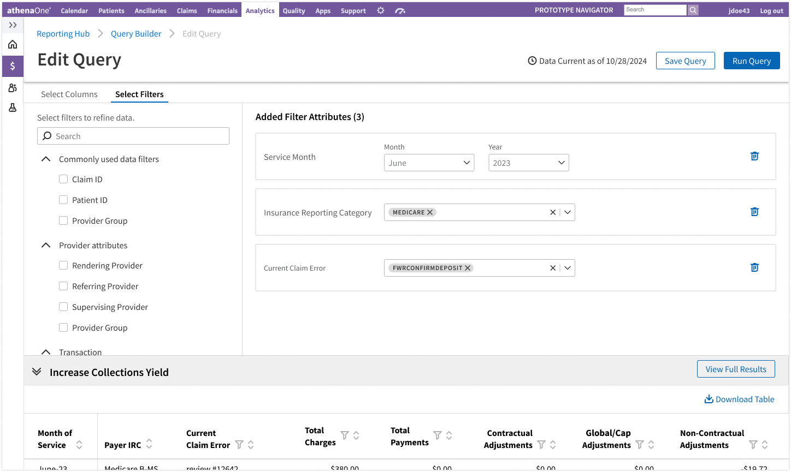
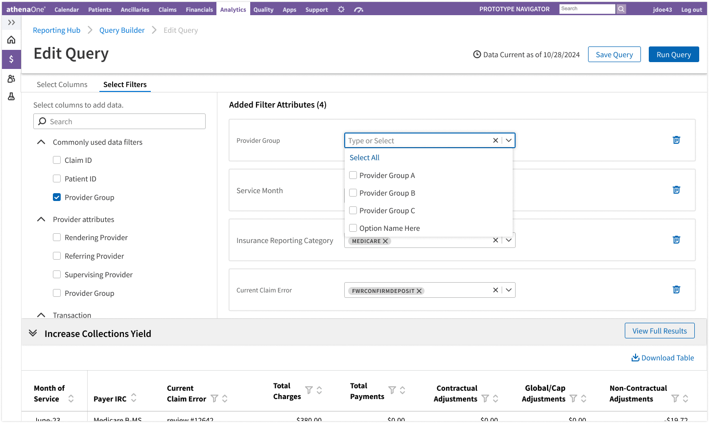
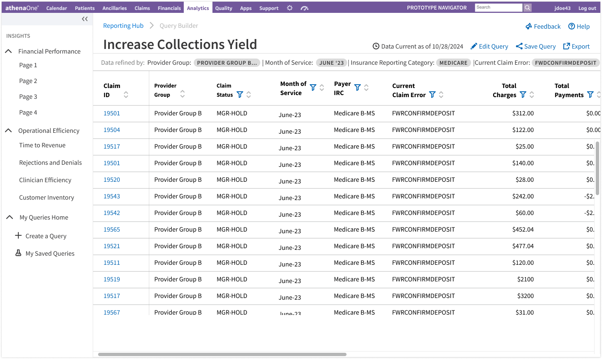
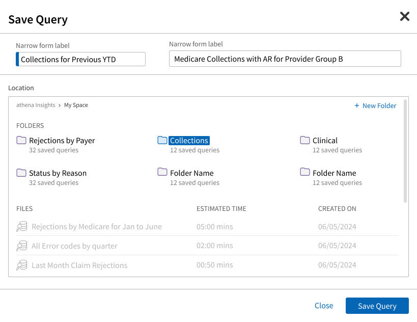
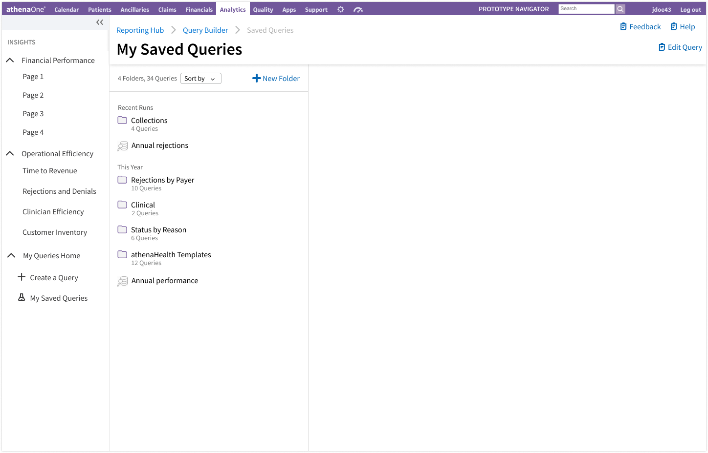
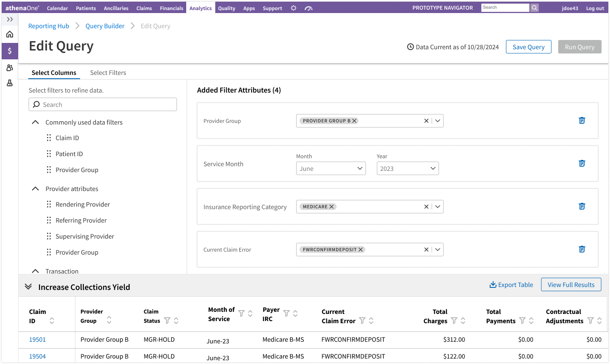
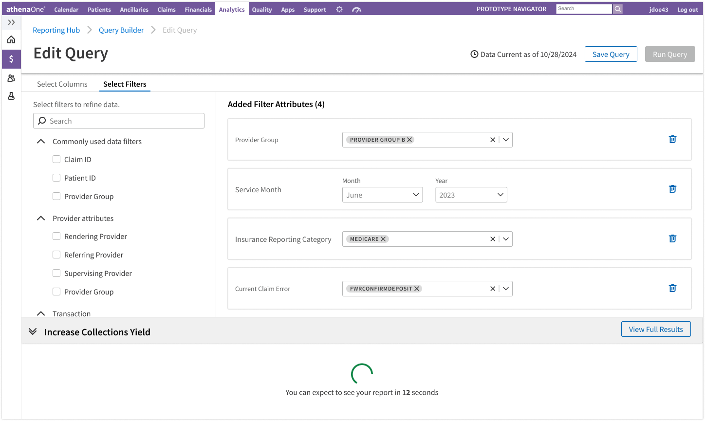

Choose what belongs in the answer
Browse available attributes and keep selected output columns visible in an ordered list.
Build a report. See what your choices change.
A connected workspace for choosing columns, refining filters, and inspecting results without losing context.
Explore the screens
Choose columns → configure filters → inspect results → save for reuse
Browse available attributes and keep selected output columns visible in an ordered list.
Choose filters separately from output columns, then inspect their configured values in the same workspace.

Review an added attribute alongside the active configuration and the result drawer.

The full result view carries the active conditions above the table, with a route back to editing.

Name the query, add a description, and choose its folder before saving.

The saved-query destination connects one-off construction to repeat reporting work.

People needed to understand fields, choose what to include, and check whether the result answered their question. A disconnected configure–run–correct loop made them carry too much context between steps.
I was the sole designer on Report Builder, leading discovery, interaction design, prototyping, and RITE iteration. Product owned the roadmap.
Keep construction, active choices, and the result connected so people can inspect and refine their work.
I worked with adjacent designers on a shared foundation while retaining differences needed by each reporting domain.
Explore how discovery shaped the workspace, how RITE refined it, and how the design moved toward development.
A direction existed before I joined. I used resonance research and early concepts to investigate whether it matched how people reasoned while building reports.
Conversations with seven customer-facing subject-matter experts and two product managers from other teams informed the problem framing, alongside existing research and discussions with my manager and product owner.
People needed clearer data definitions, a result preview while configuring, and ways to save, share, and schedule reporting work.
I designed a connected configure-and-preview workspace rather than asking users to finish configuration before checking the result.
Research account based on documented personal recollection. The screens above are prototype states; they are not presented as original resonance-study artifacts.
Cross-team discussions exposed a flaw in my initial combined attribute model: some attributes only filter data; others only belong in the output.
Separate choosing output columns from choosing filter conditions. Keep both within the same report-building workspace.
Keep the result available while users refine the query. The cost was less space for filter controls, which RITE helped refine.
I created the configure-and-preview foundation and co-ran alignment sessions with an adjacent designer. Boolean filtering, hierarchical selection, and entry points remained domain-specific.
Eight users evaluated the direction in RITE sessions. I updated the prototype after sessions as issues emerged; the qualitative feedback supported the core configure-and-preview interaction.
The connected query-building model, distinct columns and filters, and access to the result while refining the configuration.
Layout and spacing, how many filters fit in a viewport, and how easily active conditions could be scanned. The result moved into a bottom drawer, leaving attribute selection and active choices side by side.
These are documented recollections of the testing and iteration. The Figma frames are not a verified before-and-after pair. No observed task-success rate or production improvement is claimed.
Attribute selection on the left. Active choices on the right. Result preview below. This is the layout discussed in the iteration account.
Original Figma prototype state. It illustrates the resulting workspace; it does not independently establish which session prompted each change.

With Engineering, I prioritised critical interactions for development and moved the remaining work to the backlog. The exact first-release list and later backlog delivery remain unconfirmed.

The configure-and-preview model provided a reference when evaluating feasibility and later platform constraints. A Report Builder-specific MVP workshop or roadmap artifact has not been located.
With Engineering, I prioritised the most critical interactions for development and moved the rest to the backlog. The validated direction gave the team a reference for what mattered as implementation constraints changed.
The prototype connects column selection, filter configuration, result inspection, saving, and returning to saved queries.
I worked with Engineering on what could be built first. The exact first-release interaction list and later backlog delivery remain unconfirmed.
As reporting shifted toward an embedded platform, the validated direction became a benchmark for preserving the experience intent rather than a guarantee that every custom interaction would be implemented.
Handoff account: personal recollection and existing portfolio materials. Original developer specifications, acceptance criteria, and delivery records have not been recovered.
Report Builder connected configuration with feedback. Report Library made that work easier to find and return to.
Explore Report Library